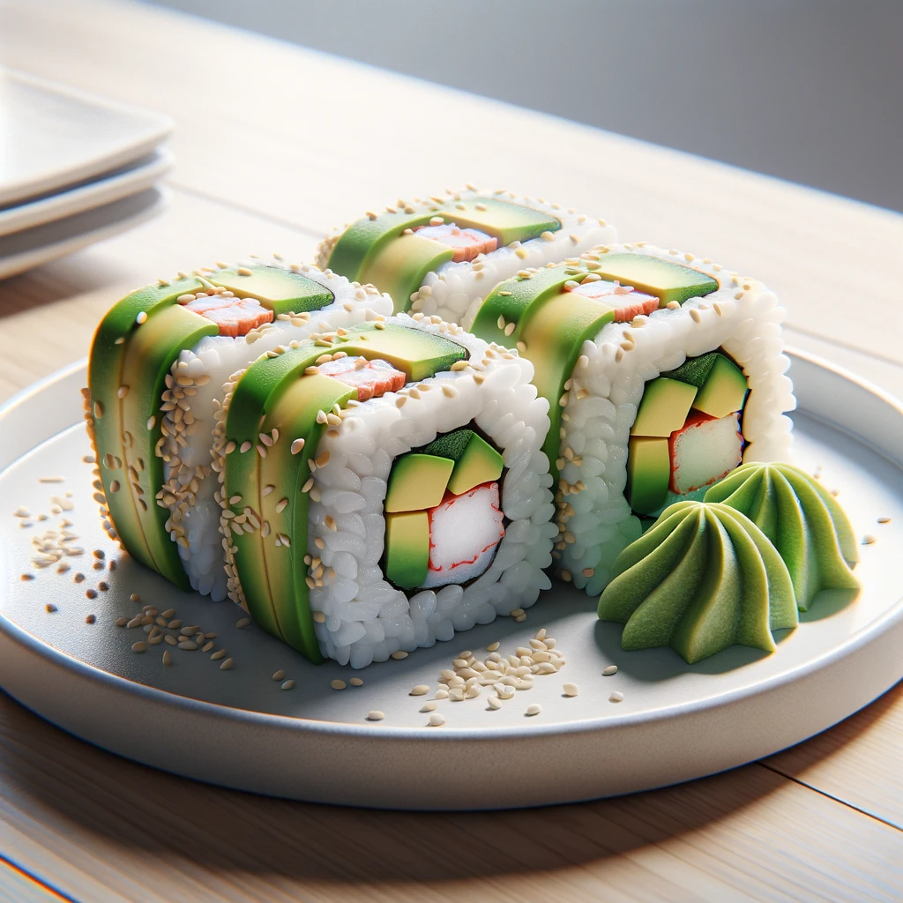

California Sushi Roll

California Sushi Roll
A California Roll is a type of sushi roll that includes crab or imitation crab, avocado, and cucumber, often rolled inside-out with sesame seeds or roe on the outside.p>
Ingredients
- Sushi rice - 2 cups, cooked and seasoned
- Nori sheets - 4
- Avocado (sliced) - 1
- Imitation crab sticks - 8
- Cucumber (julienned) - 1 medium
- Sesame seeds or roe - for coating
- Soy sauce, wasabi, and pickled ginger - for serving
Steps
- Assembly: Place a nori sheet on a bamboo mat, spread sushi rice on it, add crab, avocado, and cucumber; roll tightly.
- Finishing: Coat the roll with sesame seeds or roe, slice into pieces, and serve with soy sauce, wasabi, and pickled ginger.